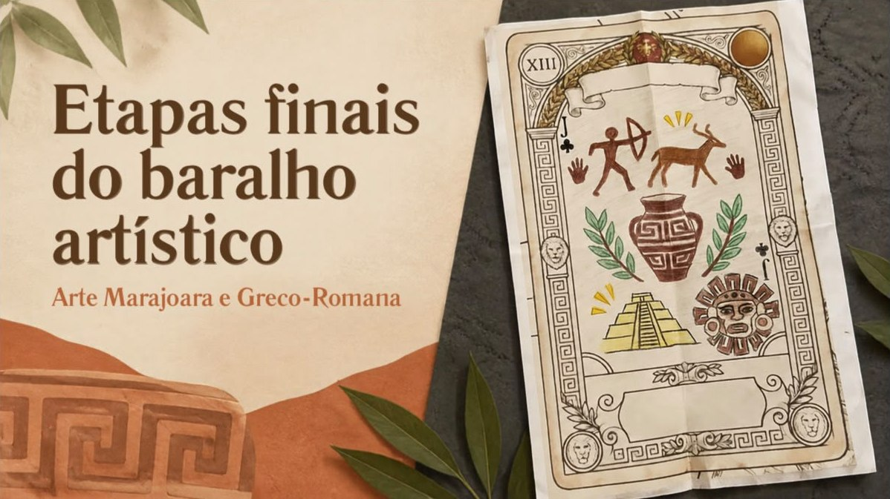
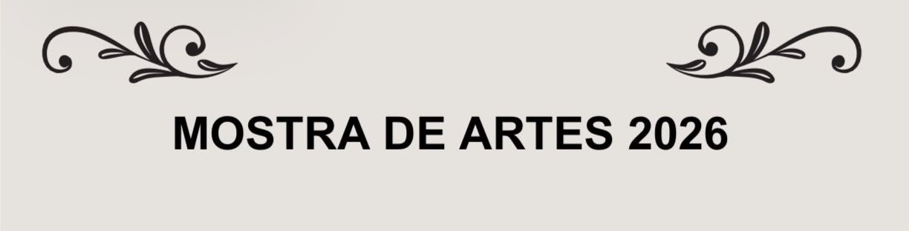

O que estudei
- Movimentos artísticos
- Arte marajoara e arte greco-romana
- Mostra de artes e memorial descritivo
Um movimento artístico reúne obras com ideias e técnicas parecidas, como o Impressionismo, o Cubismo e o Modernismo.
A arte marajoara vem da Ilha de Marajó, no Pará, e é conhecida pela cerâmica com desenhos geométricos. A greco-romana valorizava a proporção e a figura humana. As duas usam padrões que se repetem.
O memorial descritivo é o texto que explica um trabalho artístico.
Atividades e trabalhos
- Baralho Artístico: Jogo dos Movimentos
- Integrada de Linguagens (3º bimestre): Memorial Descritivo da Mostra de Artes
- Integrada de Ciências da Natureza + Mostra de Artes (2º bimestre)
No baralho, a carta juntou arte marajoara e greco-romana no mesmo desenho. Na Mostra de Artes, o grupo apresentou uma dança, que depois entrou no memorial.
Evidências da aprendizagem
Etapas finais do baralho e título do memorial.


Minha reflexão
A dança dependia do grupo inteiro. O baralho pedia mais pesquisa e desenho.